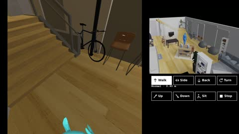
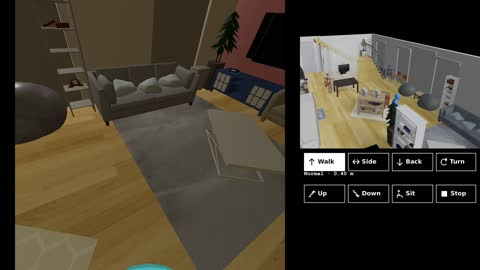
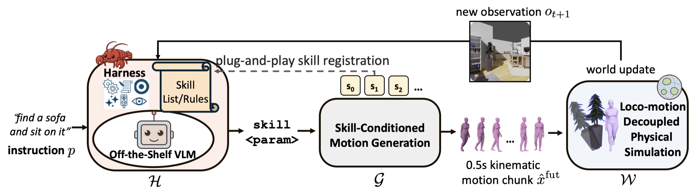
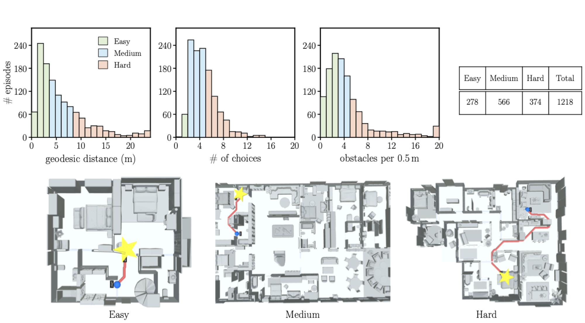
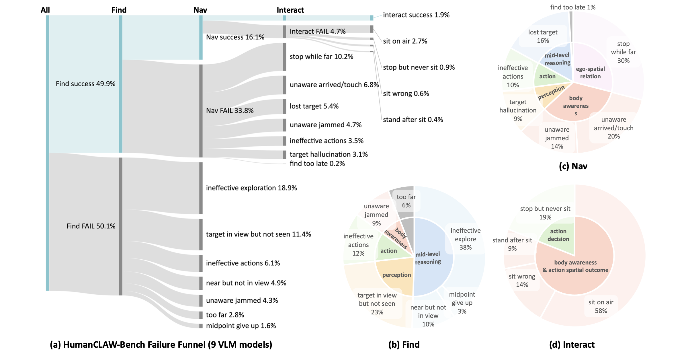

At every moment, the agent picks one atomic skill and its parameters (highlighted in the panel). That stream of small decisions is all it takes to move, climb, and interact—with real consequences in the scene. Left: egocentric view · right: third-person view and the live skill panel.


Acting in physical space requires more than choosing a symbolic command. An agent must decide where to move, how to face, and when to interact, while these decisions are realized through a body that occupies space and changes the world. Existing settings make this problem hard to study cleanly: scripted environments often remove physical consequence, while robotic systems entangle task-level decisions with balance, actuation, and controller failures.
We introduce HumanCLAW, a closed-loop framework for studying this middle layer of physical action. HumanCLAW separates decision, motion, and consequence: a VLM skill harness maps egocentric observations to structured action decisions, a skill-conditioned motion generator realizes each decision as continuous full-body motion, and a half-physics simulator gives the motion contact, collision, gravity, and object dynamics while factoring out balance and motor-tracking failures. This design keeps failures attributable to spatial action decisions rather than to a particular locomotion controller.
We further introduce HumanCLAW-Bench, a benchmark for egocentric whole-body find–navigate–interact tasks with a frozen, off-the-shelf decision maker. Across nine state-of-the-art VLMs, none solves the benchmark: the union of all nine completes only 59.7% of episodes, 40% are solved by no model, and the strongest single model sits on the target in at most 16.8%. The failures lie not in perception or motor execution but in embodied self-awareness: current VLMs recognize the scene yet cannot reliably tell where their own body is, whether it has arrived, or when it collides with the world.
Maps egocentric observations and task goals to structured action decisions—from intent, to spatial target, to atomic skill—with a skill-specific verifier that rejects unsafe or invalid choices.
A motion-continuation DiT prior with lightweight ControlNet adapters realizes each accepted skill as natural, continuous full-body human motion.
Places generated motion in scenes with contact, collision, gravity, and object dynamics—while driving the humanoid kinematically, so failures stay attributable to decisions, not controllers.

HumanCLAW separates three roles that are usually coupled. At each step, the VLM skill harness reads the egocentric view and outputs an atomic skill decision; a verifier rejects unsafe, premature, or physically invalid decisions; the motion generator continues full-body motion conditioned on the accepted skill; and the half-physics simulator executes it with real scene consequences, feeding the next egocentric observation back to the VLM—closing the loop at a sub-second action timescale.
HumanCLAW-Bench probes long-horizon action intelligence with a progressive
find–navigate–interact task: “find a <obj>,
navigate to it with zero distance, and finally sit on it.” Each stage can be attempted only after
its prerequisite is met, so the agent must explore and decide autonomously.
Scenes come from HSSD: 41 validation houses give 1,218 episodes over six target categories (chair, bed, couch, potted plant, toilet, TV). Plausibly movable objects are converted to dynamic, so contact displaces them and disturbance is measurable. Every episode is scored along three geometric difficulty dimensions—distance, choice, and obstacle—for difficulty-stratified evaluation.
Success is progressive and self-acknowledged: FindSR (target rendered in ego view and acknowledged), NavSR (within 20 cm of the target and stopping), and InteractSR (sitting with pelvis contact on the target). We additionally measure motion jerk (action quality), collisions and object disturbance (body awareness), and token cost.

Difficulty distributions over the 1,218 episodes. Distance (geodesic length to the nearest target), choice (turns plus rooms traversed), and obstacle (average obstacles within 1 m of the route) are each split into easy / medium / hard by fixed physical thresholds.
Full validation results on HumanCLAW-Bench (1,218 episodes, frozen off-the-shelf VLMs).
| VLM Backbone | High-Level Success ↑ | Body Misaware & Disturb ↓ | Action Quality ↓ | Cost | ||||||
|---|---|---|---|---|---|---|---|---|---|---|
| FindSR | NavSR | InteractSR | Coll. | #Dtb/ep | dDtb (m) | Motion Jerk | avg steps | in tok/step | out tok/step | |
| Gemini-3.1 | 64.9% | 42.5% | 16.8% | 39.5% | 1.50 | 1.22 | 5.7 | 59.1 | 5890 | 311 |
| Gemma-4-31B | 58.1% | 28.7% | 11.1% | 40.1% | 1.66 | 1.86 | 4.8 | 78.5 | 4632 | 322 |
| Gemini-2.5 | 58.5% | 21.6% | 3.5% | 37.7% | 1.35 | 3.03 | 8.7 | 71.3 | 6412 | 401 |
| GPT-5.5 | 55.8% | 14.1% | 3.4% | 43.4% | 1.53 | 1.56 | 4.2 | 82.4 | 4360 | 354 |
| Claude-4.8 | 32.7% | 8.7% | 1.5% | 44.2% | 1.73 | 2.76 | 5.3 | 81.0 | 7047 | 625 |
| Qwen3.6-27B | 51.0% | 20.9% | 0.2% | 43.0% | 1.95 | 2.16 | 6.5 | 81.6 | 4862 | 482 |
| Qwen3.6-35B-A3B | 44.6% | 5.8% | 0.0% | 34.6% | 1.45 | 2.38 | 7.4 | 74.0 | 4766 | 477 |
| Qwen3.5-27B | 37.8% | 13.5% | 0.0% | 34.5% | 0.93 | 2.38 | 6.8 | 37.6 | 4641 | 473 |
| InternVL3.5-38B | 46.8% | 0.8% | 0.0% | 51.2% | 1.90 | 2.56 | 7.2 | 93.0 | 4459 | 309 |
FindSR = target rendered in ego view (≥100 semantic px) and acknowledged by the model. Coll. = floor-relative non-ground collision step fraction. Motion Jerk = root-rigid jerk at ≈0.27 s timescale (lower = more coherent). Gold = best, blue = second best per column.
The best model finds and sits on the target in only 16.8% of episodes, and four of the nine sit on it in at most 0.2%. Every model shares the same sharp stage-by-stage drop: most of the task is lost between finding and reaching, and again between reaching and interacting.
Once a target genuinely enters the ego view it is almost always recognized. Finding breaks upstream, in bringing the target into view at all: the dominant deficit is ineffective exploration (38% of failures), not recognition (23%).
Of 5,473 episodes where the agent actively finds the target, 68% still fail to navigate to it. Nearly two-thirds of these failures are errors of egocentric self-spatial awareness, surfacing as termination decisions that fail in both directions—stopping too early, or never confirming arrival.
Given contact with the target, eventual success ranges from 90% (Gemini-3.1) down to 3.5% (InternVL3.5-38B)—an order of magnitude after navigation has already succeeded. The motion layer realizes the sit reliably; what is missing is issuing and confirming it at the right moment.
Models fail with distinct fingerprints—over-claiming, premature stops, self-veto deadlock, never terminating—and their success sets barely overlap (max Jaccard 0.43 with the best model). The nine-model union solves only 59.7%, leaving 40% of the benchmark solved by no model.

Where episodes fail across the nine VLMs. Failures trace to a single deficit: current VLMs reason about the scene, but not about the body they now inhabit—a VLM trained to describe what it sees behaves like a ghost, fluent about the world but with no sense of its own body.
@article{siyao2026humanclaw,
title = {HumanCLAW: Towards Closed-Loop Egocentric Spatial Action Intelligence},
author = {Li, Siyao and Gu, Jiawei and Liu, Shuai and Hu, Kairui and Li, Zekun and
Tang, Chengcheng and Wu, Po-Chen and Shugurov, Ivan and Li, Linjie and
Ma, Lingni and Zollhoefer, Michael and An, Sizhe and Mittal, Abhay and
Zhao, Amy and Krishna, Ranjay and Li, Manling and Liu, Ziwei and Guo, Chuan},
journal = {arXiv preprint},
year = {2026}
}